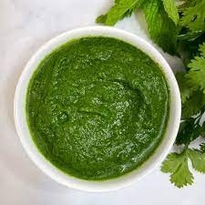

Pasta Recipe

Description
Coriander Mint Chutney also known as Green Chutney, Dhaniya Pudina Chutney, is a quick, easy accompaniment recipe that goes with every Indian snack and chaat. It is used in Indian chats, like bhel puri, sev puri, samosa, ragda patties, or as a spread for sandwiches, wraps, rolls, etc.
Ingredients
- Fresh herbs
- Green chili
- Ginger and garlic
- Lime juice
- Sugar
- Cumin and ice cubes
Instructions
- Firstly wash the coriander and mint leaves 2-3 times under water until it's clean.
- In a blender jar, add coriander leaves, mint leaves, green chilies, ginger, garlic, roasted jeera powder,
lime juice, black salt, and two ice cubes.
- Blend with 2-3 tablespoons of cold water (or as needed) until you get a thick, smooth paste.
- Transfer to a bowl and serve with snacks or store in an airtight container in the refrigerator.